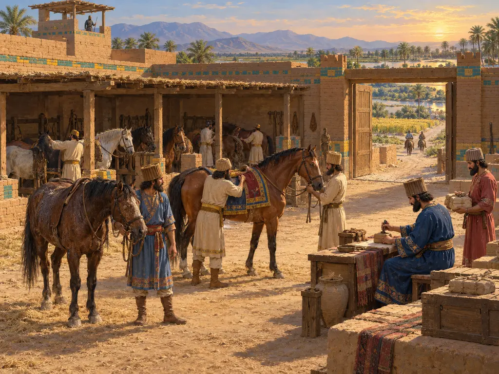
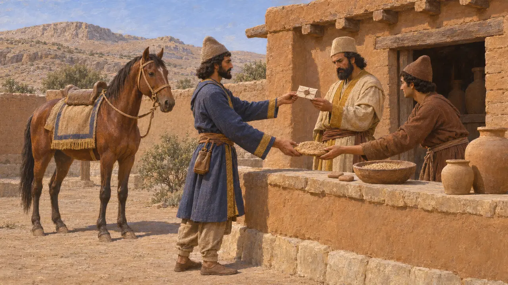

国王的信使
王家信使与阿契美尼德道路上的驿传站，约公元前530—前479年
波斯诸王统治着从爱琴海到印度河的广袤疆土，依靠信使沿着戒备森严的道路传递盖印的命令与奏报。希罗多德盛赞骑马接力传递之迅捷，据他说波斯人称之为angareion。波斯波利斯泥板则展现了这一制度朴实的一面：口粮、通行文书和奔走于途的官员。
游戏中： 游戏通过驿站建筑、御道和驿传（angaros）制度来呈现信使。历史上，驿站为一切持有盖印通行凭证的旅人提供补给，而通往萨第斯的道路只是众多路线之一。
骑手接力传递
古代记述希罗多德记述了公元前480年萨拉米斯的消息如何从希腊传至波斯。沿途每隔一日路程便驻有人马，每名骑手将消息交给下一名，犹如希腊的火炬赛跑者传递火炬。他说，无论雪、雨、酷暑还是黑夜都不能阻挡他们，波斯人称这种接力为“安加雷翁”（angareion）。希腊语中称这类信使为“安加罗斯”（angaros），此词可能源自某个近东或伊朗词语。
Herodotus 8.98
沿途驿站
古代记述希罗多德描述从萨第斯通往苏萨的道路沿途设有王家驿站和良好的客舍，渡河处与山口皆有守卫。他计算共有111座驿站，并推算一名每日行150斯塔德的旅人约需九十天走完全程。他的数字描述的是寻常旅行，而非王家信使的速度。
Herodotus 5.52-54

波斯波利斯泥板揭示了什么
见于史载波斯波利斯城防泥板大多以埃兰语写成，年代约为公元前509年至前493年，记录了在波西斯和埃兰各驿站向旅人发放的口粮。许多旅人持有国王、总督或高级官员签发的盖印文书，准许其通行并领取给养。泥板中还提到了快马信使，埃兰语称为pirradaziš。
R. T. Hallock, Persepolis Fortification Tablets, 1969
速度、路线与用途
争夺中史学家争论王家信件实际的传递速度。按现代估算，从萨第斯到苏萨的接力传递约需一到两周，而希罗多德所说的普通行程则是九十天。他所记的御道究竟取道卡帕多细亚还是奇里乞亚，同样众说纷纭。学者们还在讨论，快马信使究竟是一个独立的机构，还是只是整个驿站体系中速度最快的使用者。
P. Briant, From Cyrus to Alexander, 2002
居鲁士：驿传的创立者
后世传说色诺芬将驿传的发明归功于居鲁士。按他的说法，居鲁士测出一匹马一天能跑多远，便按此间距设立驿站，并派人备好替换的马匹。《居鲁士的教育》是对理想君主的美化描绘，因此这个故事反映的是希腊人如何想象波斯的秩序，而非记录这一体系的真正创立者。
Xenophon, Cyropaedia 8.6.17-18
来源
- Herodotus 8.98
- Herodotus 5.52-54
- R. T. Hallock, Persepolis Fortification Tablets, 1969
- P. Briant, From Cyrus to Alexander, 2002
- A. Kuhrt, The Persian Empire, 2007
- Xenophon, Cyropaedia 8.6.17-18